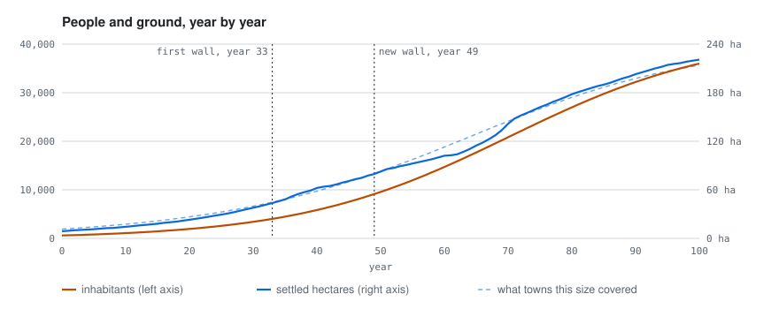

The city appears as entities with ground shapes, one batch per kind, so thousands of houses stay
cheap to draw. Heights are in world units, exaggerated by height_scale. Properties travel with
them, so snapshots can be measured or drawn by other tools.
| Kind | Shape | Properties |
|---|---|---|
street |
line with a width | class: road (reaches the city from outside), main (most chosen, space syntax), ring (where an old wall stood), street, alley, quay; from_node, to_node |
parcel |
flat outline | use, coverage, floors, year, front, depth, street, square_metres |
building |
volume (floors × 3.2 m + 2 m) | use, floors, parcel |
wall |
line with a height | year, current, height_m |
gate |
a point (its transform), no shape | year (of its wall), wall (index of the wall); only the standing wall’s gates, where roads and main streets cross it |
old_wall |
flat line | year |
square |
flat outline | — |
bridge |
line | — |
river |
line with its width | width |
Uses: housing, shop, workshop, extensive (gardens and convents in the belts where old
walls stood) and demolished (taken by a new street, square or wall).
In the years the indicators rule lists, an indicators event with the measures to compare with
historic town centres:

| Key | Measure |
|---|---|
year, inhabitants, parcels, street_pieces, walls |
counts |
settled_hectares |
ground of the parcels plus 40 % for streets and squares |
inhabitants_per_hectare |
density |
expected_hectares_cesaretti |
what a European city of this population covered around 1300 (Cesaretti et al. 2016) |
crossings_per_hectare, mean_street_piece_metres, edges_per_node, share_of_degree_three, share_of_dead_ends |
street network (Crucitti et al. 2006; Barthelemy and Flammini 2008) |
mean_block_metres |
blocks (Siksna 1997) |
mean_front_metres, mean_depth_metres |
plots (Conzen 1960) |
coverage_gsi, floor_area_ratio_far |
built coverage and floor area ratio |
Objectives in a rules file can read any of them, for example
{event: indicators, value: inhabitants, near: 6000, tolerance: 0.05}.